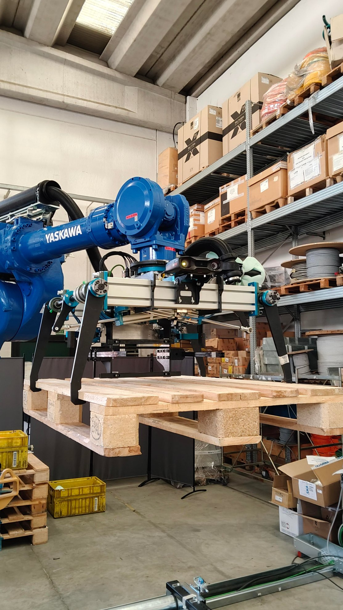

Appunti di automazione · novembre 2026
Il render era perfetto. Sullo schermo del software lo schema veniva fuori pulito, simmetrico, da stamparlo e appenderlo. Poi il pallet vero è uscito dalla linea e alla prima curva del magazzino si è aperto come un mazzo di carte: due strati scivolati di tre centimetri, un angolo in fuori, l'operatore che ferma tutto. Non era colpa del robot: era colpa dello schema, bello in due dimensioni e sbagliato in tre.
Perché lo schema di carico — il mosaico con cui i colli riempiono uno strato di pallet — non è un disegno: è un problema di geometria con l'attrito, i pesi e le curve in mezzo. Devi tassellare un rettangolo fisso — i 1.200 per 800 millimetri dell'europallet — con rettangoli che quasi mai lo dividono pari, e il risultato deve restare in piedi per chilometri di corsie e frenate. Ogni schema è un compromesso tra tre esigenze che si mordono: quanti colli entrano, quanto il carico regge a compressione, quanto resta stabile quando si muove. Migliori una, peggiori una delle altre. Sempre.

A colonna: ogni collo esattamente sopra quello dello strato sotto, spigolo su spigolo, strato dopo strato identico. Funziona perché un cartone il carico lo porta negli angoli e nelle pareti verticali — più del 70% della resistenza a compressione sta lì — e con gli spigoli allineati il peso viaggia dritto fino al piano del pallet: è la configurazione che porta di più, quella delle altezze e dei pesi maggiori.
Il prezzo della colonna è che le torri non si parlano: lateralmente il carico è un insieme di colonne indipendenti, e basta una curva presa allegra perché quelle alte comincino a camminare. L'incastro nasce per questo: strati alternati ruotati di 90 gradi, ogni collo a ponte sulla giunzione tra i due sotto, come i mattoni di un muro. Il carico diventa un blocco unico e le spinte laterali si scaricano sull'insieme. In curva e in frenata vince l'incastro.
Ma il conto torna dall'altra parte: nell'incastro i colli poggiano sui pannelli di quelli sotto, non sugli spigoli, e la resistenza a compressione cala — le misure che circolano parlano di perdite fino al 40–50% rispetto alla colonna, e anche solo sfalsare gli allineamenti costa circa un terzo della portata. La scelta, quindi, non è estetica: colli pesanti, carico alto e viaggio breve vogliono la colonna, col film a tenere insieme le torri; colli leggeri e viaggio lungo vogliono l'incastro. Il trucco che nessuno dice è che lo schema si sceglie dal viaggio, non dalla schermata del software: la stessa merce vuole due schemi diversi se va a due scaffali di distanza o se fa trecento chilometri di camion.
Il peccato capitale è lo sbalzo: il collo che sporge oltre il filo del pallet. Un collo in overhang perde l'appoggio del piano sotto di sé: la porzione di fondo a sbalzo non scarica il peso sul pallet, si schiaccia sotto gli strati che ha sopra. I numeri sono brutali: uno sbalzo anche modesto può togliere il 30% e oltre della resistenza a compressione, ed è il punto da cui il carico comincia ad aprirsi: il primo strato che cede trascina l'allineamento di tutti quelli sopra.
L'errore tipico nasce da un conto concluso male: forzando lo schema fuori misura entrano due colli in più per strato — venti colli in più a pallet, su dieci strati, un'efficienza da mostrare in riunione. E un carico che arriva inclinato di tre gradi in cima, quando va bene; che si apre alla seconda movimentazione, quando va come al solito. Quei venti colli li ho visti pagare con gli interessi, in resi e rilavorazioni. La regola che uso: il filo del pallet è un confine, non un suggerimento. Qualche millimetro di tolleranza consapevole è un conto; centimetri per far entrare un collo in più sono un altro.
E quando un carico si apre in magazzino, il fermo non è mai solo suo: diventa il collo di bottiglia vero della linea, quello che non compare in nessuna mappa — come dicevo in la mappa dei tre colli di bottiglia del fine linea. La geometria sbagliata di uno strato si paga in minuti di tutta la fabbrica.
C'è un conto che non torna quasi mai: la divisione tra l'impronta del pallet e quella del collo. Un 400 per 300 sull'europallet si incastra pulito, senza avanzare niente. Un 500 per 320 lascia una striscia morta che nessun giro di colli nello stesso verso riempie. Quel resto deve andare da qualche parte, e le strade sono tre: il vuoto interno (schema a girandola, colli ruotati attorno al centro e un piccolo quadrato vuoto in mezzo — un buco ordinato invece di uno sbalzo disordinato), lo schema misto (colli in due versi nello stesso strato, a chiudere la superficie), o la via pigra: spingere tutto fuori misura e accettare lo sbalzo, di cui abbiamo già detto il costo.
La differenza non è accademica: sullo stesso europallet, uno schema dritto pigro copre poco più del 60% della superficie dello strato, uno schema misto ben cercato supera il 90% — a parità di merce, un terzo di pallet in meno da movimentare e stoccare. Ogni collo ruotato cambia il lavoro della macchina: orientamento in presa, rotazione in volo, tempi di ciclo. Lo schema si decide insieme al robot e alla pinza, non dopo averli comprati: uno schema che chiede una rotazione che la testa non fa è solo un altro render da appendere.
Il film estensibile non è lo scheletro del carico: è la cintura. Tiene insieme quello che la geometria ha già messo in piedi, con la sua forza di contenimento e i giri alla base ancorati al pallet — e con la tensione giusta: troppo tirato, taglia gli spigoli e schiaccia i colli leggeri degli strati esterni, e servono i cantonali a proteggere gli angoli. Se lo schema è sbagliato, il film lo maschera per i primi metri di corsia. Poi la fisica presenta il conto, di solito in curva.
L'interfalda è più onesta: un foglio rigido tra uno strato e l'altro, che aumenta l'attrito (gli strati non scivolano), ripartisce il carico sui pannelli e protegge i colli sotto. Nello schema a colonna, una ogni due o tre strati ricuce le torri indipendenti senza rinunciare alla portata: è il compromesso che uso più spesso quando il viaggio è misto. Costa secondi di ciclo e un magazzino di interfalde da gestire: si mette dove il viaggio la chiede, non per abitudine.
Riassunto da campo: lo schema si decide guardando il cartone (umidità compresa — un cartone che ha preso umido perde resistenza e lo schema giusto diventa ottimista), il viaggio e la macchina. Il software cerca più combinazioni di quante ne proverei a mano in una settimana; ma un pallet ben composto non si riconosce dalla simmetria sullo schermo: si riconosce dall'ultima curva del magazzino, quando arriva in baia ancora dritto.